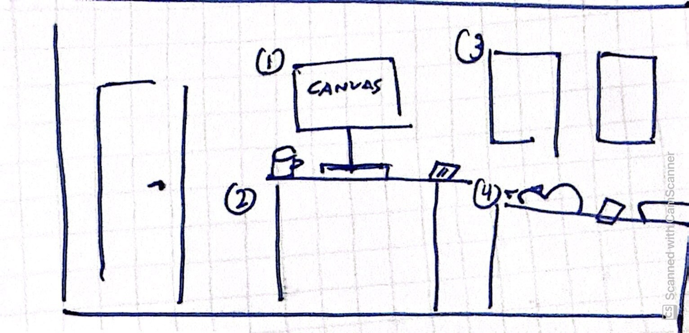
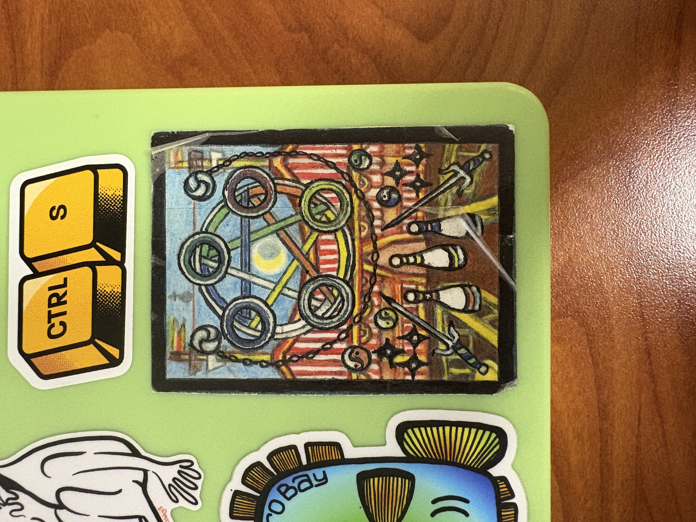

The article “Game Design UX Best Practices,” by Amir Dori, outlines the best practices for game mechanics in mobile games. I found it interesting how UX design blends digital and physical experiences. The article emphasizes the importance of catering to comfort zones. Since most people are right-handed, the buttons must be positioned in a way that allows for comfortable and convenient one-handed use. The article touches on dark design patterns, especially related to monetization. By placing buttons that lead to purchase in comfort zones, users accidentally press these buttons, leading to increased revenue. This statement made me reflect on how designers influence sales and revenue. Design is far more than aesthetics. It’s the thoughtful blend of visual appeal and intuitive experiences. I wonder how most game designers approach dark design patterns. I would imagine that they are faced with a moral dilemma, since a lot of mobile games are somewhat predatory. I wonder how much say they have in implementing dark design patterns.

Meredith’s concept sketch for her interactive room project.
For Meredith’s topic, she chose to tell a story of her coming of age through the items in her room. She wants to represent the journey of moving out and living independently, and how she has grown since. Even though she only has sketches right now, I can see the visison for what she wants to create. She is creating a copy of her room in Illustrator and all of the different objects. When you hover your mouse over an object, it will give you more information about it. I like how her concept goes beyond typical click-through websites. Her idea is very interactive and makes a 2D experience feel like it's in the physical realm.
It’s a little hard to offer suggestions since the image is still in sketches, but I told her to focus on making each item in the room recognizable. Stylistically, it would make the most sense for each item to have a universal art style and a colorway that blends together. One thing to explore is whether or not she wants the landing page to look cluttered or not. We talked about how a cluttered space can represent all of the changes that she is going through, but it can also be overwhelming for the person interacting with the site.
Part 2: My Image

My favorite laptop sticker.
I feel like this image itself is not very interesting, but the story behind it is. I bought this sticker from this man on Telegraph Ave. in Berekely. He dresses in all chainmail and is a professional medieval-times larper. He sells his metalwork on the street. However, if you know how to ask, you can take a look at his sticker book. He sells each of his stickers for one dollar, and they are hand-drawn on FedEx package labels. If you ask, he will explain the meaning behind all of his stickers. I bought this sticker from him about two years ago. It’s a complex design, and honestly, I don’t really remember the meaning behind it. To me, this sticker represents the funny charm of the East Bay Area (where I’m from). It’s not uncommon to find weird little things like this around Oakland or Berkeley. These kinds of things remind me of home.
I was talking to Meredith about ways to make this layout more engaging and complex than a simple scroll over. I want to highlight all of the stickers on my laptop. She suggested creating some sort of story will all of the stickers. She said that I could use Photoshop to cut them out, instead of simply putting an image of my entire laptop on it. I’m also considering ways to use CSS animations to emphasize certain aspects of the photos. We also talked about having scrolling text on the side that tells the story of each sticker one at a time (rather than pop-ups).
Visual Thinking Strategies
Nov. 3rd, 2025
The article “10 Intriguing Photographs to Teach Close Reading and Visual Thinking Skills” by Michael Gonchar highlighted the connection between visuals and close reading skills. Many images suggest a reference to an idea, rather than stating it outright (like in writing). Analyzing pictures and distilling their main message forces readers to slow down and consider deeper meanings. Visuals have a large impact on website design as well. But overusing visuals contributes to a clunky site with confusing meaning. Visuals should add to the experience, and not distract from the core message. I visited some of the websites from the website awwwards. Even though most of these websites are very visually striking, after a while, it becomes difficult to undertsand some of their core messages since the interaction design dominates the site. This concept reminds me of advice I’ve received about portfolio design. I’ve been told that while designers are tempted to add many interactions to their portfolio, you don’t want the design of the front page to upstage your actual projects. Additionally, adding heavy visuals to a site without optimizing the images contributes to longer screen loading times for users. On the contrary, heavy visuals add intrigue and transform a static site to something more dimensional.
The article “Overuse of Overlays: How to Avoid Misusing Lightboxes” by Kathryn Whitenton outlines proper uses of overlays to ensure users are not frustrated when trying to digest vital information. Whitenton points to the 5 Ws — Who, What, When, Where, and Why — to guide designers when using overlays. Through this article, I learned that the use of overlays affects accessibility as well. For example, someone using a screen reader may find overlays disorienting. Typical users also occasionally find overlays disorienting — especially when the “exit” button is unclear. To help mitigate confusion, designers may label their buttons clearly with actionable items. Often, overlays contain important information (such as payment confirmation), so ensuring the user understands their purpose is essential. Overlays are great for calling attention to or building on important information on a page rather than introducing secondary items. Unfortunetly, many pop-up ads appear as overlays, so users are accustomed to quickly exiting overlays. For that reason, it’s best to include related information in overlays to highlight the preexisting content on a page rather than pivot from what’s already there. .
Form Design
Nov. 1st, 2025
The article “Best Practices for Form Design” by Salim Ansari illustrated the importance of proper form design. I found the consideration of psychology interesting in the context of form design. The article mentioned that clearly outlining the steps to users increases their likelihood of completing the form. Chunking the forms into small, actionable steps helps reduce cognitive load and visual clutter. Ansari repeatedly stressed the importance of proper UI throughout the article. Ensuring that the fields are sized correctly reduces confusion and increases the likelihood of form completion. Overall, this article made me reflect on the importance of forms in UI/UX design. They are often a users first impression of a site, and influence overall retention. They also hold valuable information (like SSNs, medical information, credit card info), so it’s importance that users have trust in the forms they’re using.